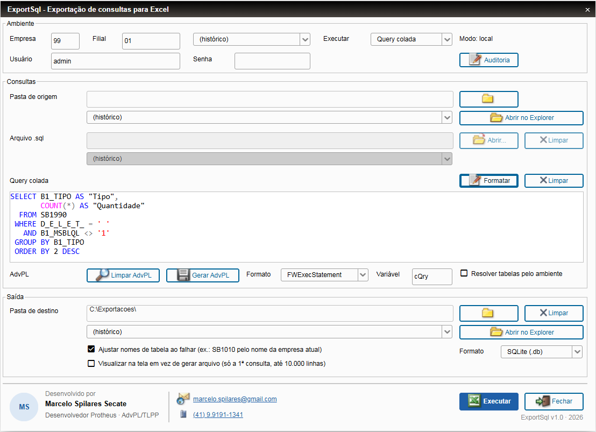
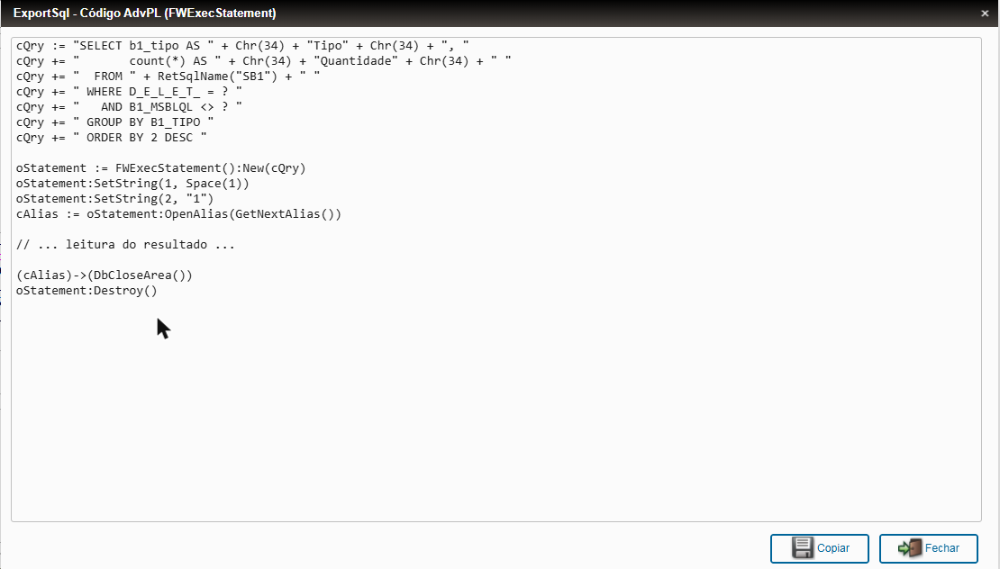
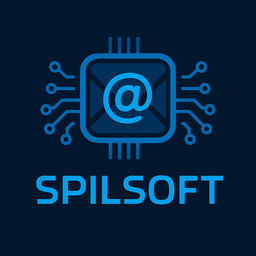

Consultas SQL dentro do Protheus,
direto para Excel ou .sdb.
Sem acesso direto ao banco? Com o ExportSql você roda suas consultas de dentro do próprio ERP, vê o resultado na tela ou gera, por consulta, uma planilha .xlsx ou um arquivo .sdb do Protheus para importar em outra base, com segurança e auditoria.

Uma consulta rápida não devia virar uma novela
Em ambientes como o T-Cloud, ou em clientes onde a infraestrutura não é sua, conferir um dado no banco costuma depender de terceiros.
Tudo o que você precisa para consultar com tranquilidade
A rotina roda no próprio Protheus, pelo SmartClient ou pelo webapp.
Excel ou .sdb
Um arquivo .sql com várias consultas gera um arquivo para cada uma: .xlsx com a query documentada numa aba, ou .sdb (o mesmo formato do APSDU) com a query num .txt ao lado.
Resultado na tela
Marque "Visualizar" e veja até 10.000 linhas numa grade em tela cheia, sem abrir o Excel.
Editor com cores
Cores no estilo do SQL Server Management Studio e botão Formatar para deixar a query legível.
Query ↔ AdvPL
Gera o código em String, BeginSql ou FWExecStatement. E faz o caminho inverso: cola o trecho do fonte e extrai o SQL limpo.
Tipos pelo dicionário
Datas e números chegam no Excel e no .sdb com o tipo certo, lidos da SX3.
Ajuste de tabelas
Query escrita para SB1010 na empresa 99? A rotina ajusta o nome da tabela para a empresa atual.
Veja como funciona
Prints da rotina rodando no webapp do Protheus.
Uma tela, do ambiente à saída
Tudo organizado em três blocos: ambiente, consultas e saída.
- Login com usuário do Protheus e escolha de empresa e filial
- Execute um arquivo .sql ou uma query colada
- Histórico de pastas, arquivos e opções
- Saída em Excel, .sdb ou na tela

Da query para o fonte em um clique
Escolha o formato e copie o código pronto para colar no seu fonte.
- Tabela física vira
RetSqlName - Valores fixos viram parâmetros do FWExecStatement
- Também em String ou BeginSql
Feito para facilitar, com segurança
A rotina é uma ferramenta de administrador. Por isso nasceu com controle de acesso e rastreabilidade.
Instalação em quatro passos
Não há tabelas, campos nem parâmetros para criar.
Baixe o patch
O pacote traz o patch e o LEIA-ME com todos os detalhes.
Aplique no RPO
Faça backup do RPO e aplique o patch com a ferramenta que você já usa.
Abra a rotina
No SmartClient ou no webapp, use o programa inicial U_SPILR01.
Entre e consulte
Informe empresa, filial e um usuário do grupo Administradores.
Baixe o ExportSql
Gratuito. Se for útil para você, compartilhe com quem trabalha com Protheus e me conte o que achou.
Baixar o patch Versão 1.0 · Protheus 12.1.2510 · SQL Server
Marcelo Spilares Secate · SpilSoft
Desenvolvedor Protheus · AdvPL/TLPP. O ExportSql foi desenvolvido com IA como par de programação, com especificação, revisão de cada linha e testes no ambiente real.
Dúvidas frequentes
É gratuito mesmo?
Sim. A rotina é gratuita e fornecida como está, sem garantia.
Funciona com outros bancos além do SQL Server?
A rotina executa o SQL pelo DBAccess e não converte sintaxe: escreva a consulta para o banco do seu ambiente. Até agora ela foi testada com SQL Server.
Para que serve o .sdb?
Para levar só os registros que interessam de uma base para outra: você filtra por SQL na homologação, por exemplo, e importa o .sdb na produção pelo APSDU. É o mesmo formato que o APSDU gera ao copiar uma tabela, criado pelo próprio Protheus, com os tipos e tamanhos de cada campo. Para levar também os registros excluídos marcados como excluídos, traga D_E_L_E_T_ AS EXP_DEL na query. Um .txt ao lado guarda a query executada.
Preciso criar tabelas ou campos no dicionário?
Não. Basta aplicar o patch no RPO.
Qualquer usuário pode usar?
Não. Só usuários do grupo Administradores (000000) conseguem entrar, e cada execução fica registrada na auditoria.
Dá para alterar dados no banco por ela?
Não. Comandos de alteração são bloqueados. Mesmo assim, recomendamos um usuário de banco somente leitura no DBAccess.